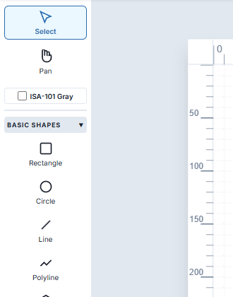
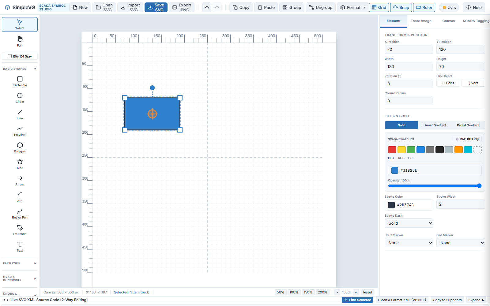
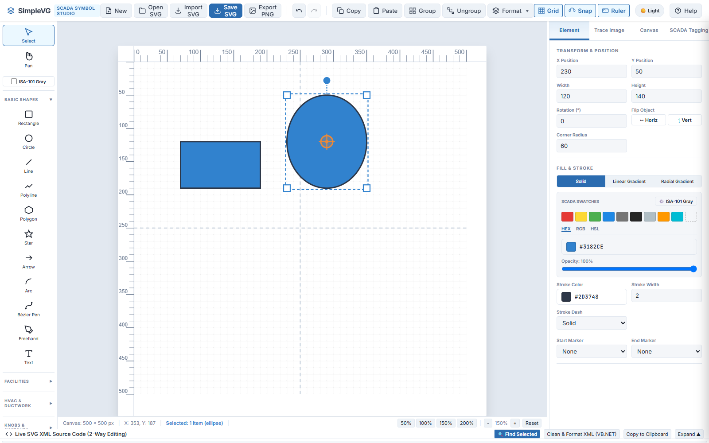
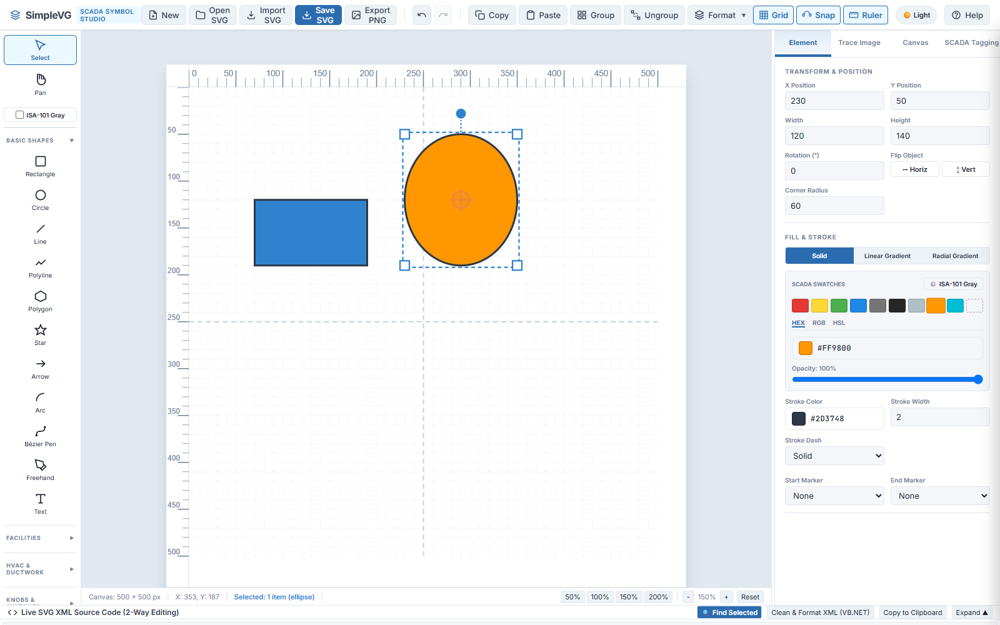
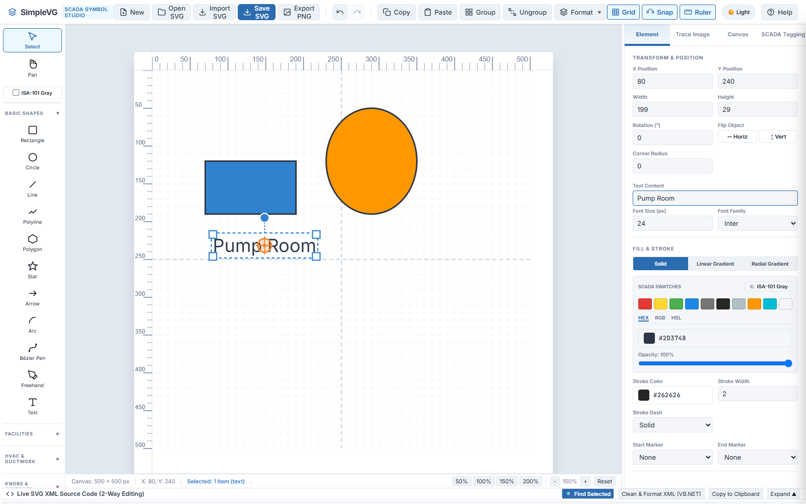

SimpleVG › Tutorial › Chapter 2
Start with a blank canvas. Click New in the menu bar if you have anything on it.
In the Toolbox on the left, click the BASIC SHAPES heading to expand it. This section holds the drawing tools: Rectangle, Circle, Line, Polyline, Polygon, Star, Arrow, Arc, Bézier Pen, Freehand and Text.

Each tool has a keyboard shortcut. Hover over a tool to see it, for example R for Rectangle and C for Circle.
Click the Rectangle tool, then press and drag on the canvas, and release. The rectangle appears with the default blue fill and a dark outline, and it stays selected, with handles around it.

Notice that the shape lands on the grid. With Snap switched on in the menu bar, positions and sizes round to the 10 pixel grid, which keeps drawings tidy. Click Snap to turn it off if you need free placement.
Choose the Circle tool and drag out a second shape. Drag any shape and you get an ellipse. Hold Shift while dragging to constrain it to a perfect circle.

With a shape selected, the Element tab of the Inspector shows its X Position, Y Position, Width and Height. Type new values into any of them and the shape follows, which is the way to place it exactly. You can also drag a shape to move it, drag a handle to resize it, or use the round handle above it to rotate it.
To pick a shape, choose the Select tool at the top of the Toolbox and click it.
Select the ellipse. Under FILL & STROKE in the Inspector are the SCADA Swatches, a row of colours chosen for process graphics, such as Alarm Red, Warning Yellow, Running Green and Process Amber. Click the amber swatch and the ellipse changes at once. Hover over any swatch to see its name.

For any other colour, use the hex value box below the swatches. The Stroke Color and Stroke Width below it control the outline in the same way.
Choose the Text tool and click on the canvas. A text label appears and is selected. In the Inspector, type your own wording into Text Content, here Pump Room. Font size and font family are alongside it.

In the next chapter we look at the canvas, the grid and snapping.